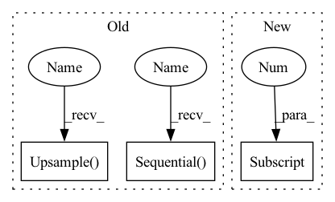

Pattern ID :19709

Before Change
kernel_size= 3, padding= 1),
nn.BatchNorm2d(64),
nn.ReLU(),
nn.Upsample(scale_factor=2, mode="bilinear",
align_corners=True))
)
in_channels = 64
self.decoder = nn.Sequential(*modules)
self.final_layer = nn.Sequential(
nn.Conv2d(64, out_channels= 3,
kernel_size= 3, padding= 1),
nn.Sigmoid())
def encode(self, input: Tensor) -> List[Tensor]:
Encodes the input by passing through the encoder network
After Change
stride=2,
padding=1,
output_padding=1),
nn.BatchNorm2d(hidden_dims[-1]),
nn.LeakyReLU(),
nn.Conv2d(hidden_dims[-1], out_channels=3,
kernel_size=3, padding=1),
In pattern: SUPERPATTERN
Frequency: 3
Non-data size: 3
Instances
Fragment ID: 64293333
Project Name: antixk/pytorch-vae
Commit Name: b12ec15961ce3df885db81550ee313a9e3c940f6
Time: 2020-01-16
Author: anandkrish894@gmail.com
File Name: models/gamma_vae.py
M Class Name: GammaVAE
N Class Name: GammaVAE
M Method Name: __init__(4)
N Method Name: __init__(4)
M Parent Class: BaseVAE
N Parent Class: BaseVAE
M File Name: models/gamma_vae.py
N File Name: models/gamma_vae.py
M Start Line: 24
M End Line: 68
N Start Line: 23
N End Line: 73
'>
Before Change
kernel_size= 3, padding= 1),
nn.BatchNorm2d(64),
nn.ReLU(),
nn.Upsample(scale_factor=2, mode="bilinear",
align_corners=True))
)
in_channels = 64
self.decoder = nn.Sequential(*modules)
self.final_layer = nn.Sequential(
nn.Conv2d(64, out_channels= 3,
kernel_size= 3, padding= 1),
nn.Sigmoid())
def encode(self, input: Tensor) -> List[Tensor]:
Encodes the input by passing through the encoder network
After Change
self.encoder = nn.Sequential(*modules)
self.fc_mu = nn.Linear(hidden_dims[-1] * 4, latent_dim)
self.fc_var = nn.Linear(hidden_dims[-1] * 4, latent_dim)
// Build Decoder
modules = []
'>
Fragment ID: 64293335
Project Name: antixk/pytorch-vae
Commit Name: b12ec15961ce3df885db81550ee313a9e3c940f6
Time: 2020-01-16
Author: anandkrish894@gmail.com
File Name: models/gamma_vae.py
M Class Name: GammaVAE
N Class Name: GammaVAE
M Method Name: __init__(4)
N Method Name: __init__(4)
M Parent Class: BaseVAE
N Parent Class: BaseVAE
M File Name: models/gamma_vae.py
N File Name: models/gamma_vae.py
M Start Line: 24
M End Line: 68
N Start Line: 23
N End Line: 73
'>
Before Change
// Auxiliary heads
self.aux_head_s16 = nn.Sequential(
SegmentationHead(stage4_s16_channels, aux_head_channels, new_num_classes, dropout=dropout),
nn.Upsample(scale_factor=16, mode="bilinear", align_corners=True)
)
self.aux_head_s32 = nn.Sequential(
SegmentationHead(stage5_s32_channels, aux_head_channels, new_num_classes, dropout=dropout),
nn.Upsample(scale_factor=32, mode="bilinear", align_corners=True)
)
// Detail head
self.detail_head8 = nn.Sequential(
SegmentationHead(stage3_s8_channels, detail_head_channels, 1, dropout=dropout),
nn.Upsample(scale_factor=8, mode="bilinear", align_corners=True)
After Change
self.aux_head_s16[0] = SegmentationHead(stage4_s16_channels, aux_head_channels, new_num_classes, dropout=dropout)
self.aux_head_s32[0] = SegmentationHead(stage5_s32_channels, aux_head_channels, new_num_classes, dropout=dropout)
// Detail head
self.detail_head8[0] = SegmentationHead(stage3_s8_channels, detail_head_channels, 1, dropout=dropout)
'>
Fragment ID: 64293331
Project Name: deci-ai/super-gradients
Commit Name: efc859216bf873f5368b9cd169108089c9406a9e
Time: 2022-01-16
Author: shay.aharon@deci.ai
File Name: src/super_gradients/training/models/segmentation_models/stdc.py
M Class Name: STDCSegmentationBase
N Class Name: STDCSegmentationBase
M Method Name: replace_head(2)
N Method Name: replace_head(2)
M Parent Class: SgModule
N Parent Class: SgModule
M File Name: src/super_gradients/training/models/segmentation_models/stdc.py
N File Name: src/super_gradients/training/models/segmentation_models/stdc.py
M Start Line: 524
M End Line: 540
N Start Line: 525
N End Line: 532
'>
Before Change
kernel_size= 3, padding= 1),
nn.BatchNorm2d(64),
nn.ReLU(),
nn.Upsample(scale_factor=2, mode="bilinear",
align_corners=True))
)
in_channels = 64
self.decoder = nn.Sequential(*modules)
self.final_layer = nn.Sequential(
nn.Conv2d(64, out_channels= 3,
kernel_size= 3, padding= 1),
nn.Sigmoid())
def encode(self, input: Tensor) -> List[Tensor]:
Encodes the input by passing through the encoder network
After Change
in_channels = h_dim
self.encoder = nn.Sequential(*modules)
self.fc_mu = nn.Linear(hidden_dims[-1]*4, latent_dim)
self.fc_var = nn.Linear(hidden_dims[-1]*4, latent_dim)
'>
Fragment ID: 64293337
Project Name: antixk/pytorch-vae
Commit Name: 291a37d9fe92de7d781575163f2cf6453951f652
Time: 2020-01-15
Author: anandkrish894@gmail.com
File Name: models/vanilla_vae.py
M Class Name: VanillaVAE
N Class Name: VanillaVAE
M Method Name: __init__(4)
N Method Name: __init__(4)
M Parent Class: BaseVAE
N Parent Class: BaseVAE
M File Name: models/vanilla_vae.py
N File Name: models/vanilla_vae.py
M Start Line: 20
M End Line: 64
N Start Line: 20
N End Line: 73